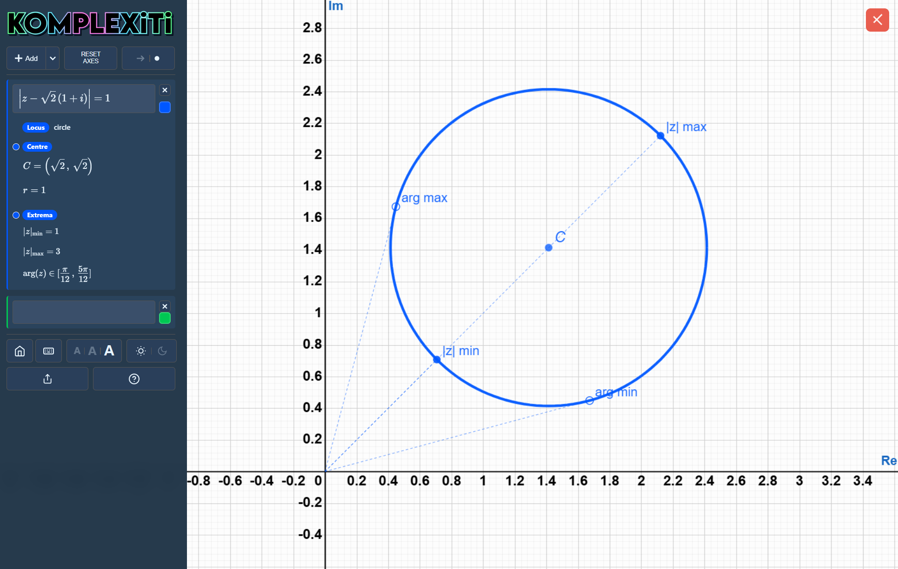
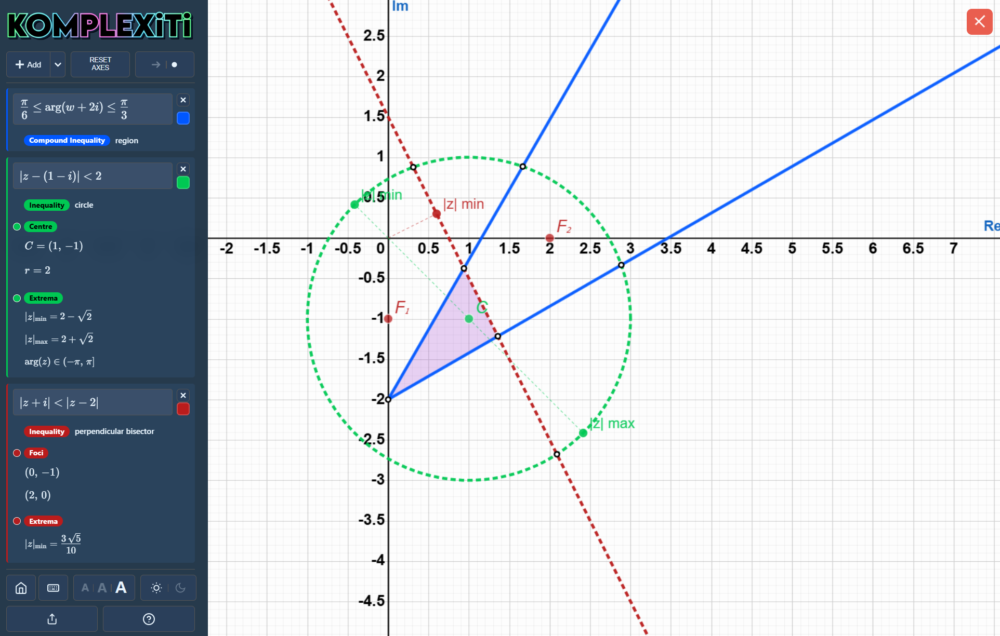

The Argand diagram
Plotting and manipulating complex numbers
Komplexiti places each complex number you add as a labelled point on the interactive Argand diagram. You can enter numbers in Cartesian form (a + bi), and the diagram updates immediately as you type.
Points can be displayed as arrows from the origin or as dots, depending on whether you want a vector or point interpretation. The display mode can be toggled at any time and applies to the whole diagram.
Multiple numbers and dynamic updates
You can add as many complex numbers as you need. Each is given a distinct colour and label. When you change the value of a number, its position and any associated loci update instantly, which makes it easy to show the effect of changing a parameter or moving a point.
Light and dark themes
Komplexiti includes both a dark theme and a light theme. The dark theme is the default and suits most screens well. The light theme is suitable for projected lessons, printing and use in bright conditions. The theme can be switched from the panel at any time.
Complex number forms
Cartesian form (a + bi)
Numbers can be entered and displayed in Cartesian form. The real part is read from the horizontal axis and the imaginary part from the vertical axis, matching the standard Argand diagram layout taught at A Level.
Modulus-argument (polar) form
Komplexiti can display each complex number's modulus and argument alongside its Cartesian coordinates. This helps connect the algebraic form r(cos θ + i sin θ) to the geometric picture of a distance from the origin and an angle from the positive real axis.
The argument is given in radians and expressed as a multiple of π where possible, which is consistent with how answers are expected in A Level Further Maths.
Exponential form
The exponential form reiθ is also available. This is useful when students have covered Euler's formula and need to see all three representations of the same number side by side.

Polynomial equations and roots
Solving polynomial equations
Komplexiti can find the roots of polynomial equations. You enter the equation and the app calculates all roots, including any complex ones, and plots them on the Argand diagram.
This is useful for demonstrating the conjugate root theorem: if the polynomial has real coefficients, complex roots always appear in conjugate pairs, which is immediately visible on the diagram.
Roots of unity and geometric patterns
Finding the nth roots of a complex number produces a set of equally spaced points around a circle centred at the origin. Komplexiti plots all these roots simultaneously so students can see the regular polygon pattern that emerges, connecting the algebra to the geometry.
Loci in the complex plane
Circles: |z − a| = r
A circle locus represents all points z a fixed distance r from a given complex number a. Komplexiti draws this as a circle on the Argand diagram. You can specify the centre and radius directly, and the circle updates as values change.
This covers one of the most common locus types in A Level Further Maths and helps students see why the condition |z − a| = r is the complex plane equivalent of a circle equation.
Perpendicular bisectors: |z − a| = |z − b|
The locus of points equidistant from two complex numbers a and b is the perpendicular bisector of the line segment joining them. Komplexiti draws this line, which can help students verify algebraic working and see the geometric meaning of the condition.
Half-lines: arg(z − a) = θ
A half-line locus represents all points z from which the direction to a fixed point a is a given angle θ. Komplexiti draws the half-line starting from the fixed point at the specified argument, which is a key locus type for A Level Further Maths.
Cartesian lines, spirals, conjugate and algebraic loci
Komplexiti also supports Cartesian line loci, spiral loci, conjugate loci and algebraic loci entered symbolically. This broader range covers the less common locus types that appear in Further Maths examinations and extends beyond the standard set.
Multiple loci can be active on the same diagram at once. This makes it straightforward to show intersections of loci and the regions that satisfy combinations of conditions.

Teaching and practical use
A Level Further Maths
Komplexiti is built specifically for A Level Further Maths complex number topics. It covers the content taught across the major examination boards, including Cartesian and polar forms, conjugates, modulus and argument, polynomial roots and loci.
It is particularly useful for locus problems where a static diagram makes the construction harder to follow, and for polynomial work where the conjugate root theorem can be demonstrated visually rather than just stated.
Classroom display and explanation
The interactive diagram works well on a projector or interactive whiteboard. Adding a number and watching it appear on the Argand diagram, or adding a locus condition and seeing the curve drawn immediately, gives a live demonstration that is harder to achieve with static slides.
Switching between number forms while a point is plotted helps students see that Cartesian, modulus-argument and exponential forms all describe exactly the same number from different angles.
Sharing lesson examples and exports
You can share complete diagram setups by URL or QR code, including all plotted complex numbers, loci, polynomial equations, viewport settings and analysis markers. This is useful for sending examples to students, preparing revision tasks or returning to a saved exploration later.
Diagrams can also be exported as PNG or SVG images for worksheets, slides and documents. SVG output remains crisp at any scale and can be customised with options for frame shape, colour modes, gridlines, line width and label density.
Access, devices and offline use
Komplexiti runs in the browser on desktop, tablet and mobile devices. On smaller screens the layout adapts to keep the Argand diagram and controls accessible, and touch input is fully supported for panning and zooming the diagram.
On supported devices, Komplexiti can be installed as a Progressive Web App. Once its files have loaded and been cached, it can continue to open and work without a network connection, which is useful in classrooms and places with unreliable Wi-Fi.
On iPhone and iPad, open Komplexiti in Safari, tap the Share button, then choose Add to Home Screen. On Android and desktop browsers, installation is usually available from the browser menu or address bar when supported.